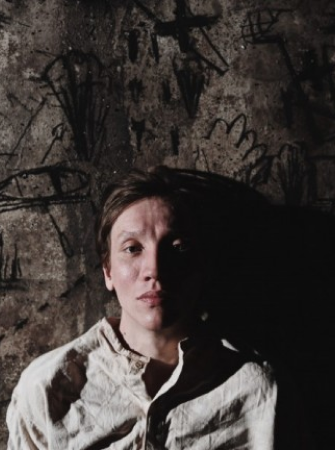

Ближайшие премьеры
Иваново детство
Иван — это ребёнок, снедаемый страстью взрослого. Он потерял детство на войне и погиб, потому что жил как взрослый.

Дата основания
2020-2021 год
Абсолютно для всех
Иван — это ребёнок, снедаемый страстью взрослого. Он потерял детство на войне и погиб, потому что жил как взрослый.

Богач и философ Ксанф вернулся из путешествия с группой купленных им рабов, один из которых - Эзоп - настолько безобразен и уродлив.
Богач и философ Ксанф вернулся из путешествия с группой купленных им рабов, один из которых - Эзоп - настолько безобразен и уродлив.

24 мая пройдет благотворительный показ спектакля “Иваново детство”. Все средства от реализации билетов будут семьям погибших в казанской гимназии №175

29 мая в 18:00 пройдет очередной показ в рамках проекта "Театр без границ" Казанского ТЮЗа и фонда "День добрых дел". Тифлокомментированием и сурдопереводом будет оснащен "Маленький принц" - трогательная и мудрая история о дружбе и взрослении.

Президент РТ Рустам Минниханов присвоил ему звание в Казанском Кремле Сегодня Президент Республики Татарстан Рустам Минниханов вручил государственные награды Российской Федерации и Республики Татарстан.

Им станет постановка о 1970-1980 годах театра, приуроченная к 90-летнему юбилею ТЮЗа 26 марта в 18:30 в Казанском ТЮЗе пройдет премьера спектакля-пасьянса "Первый тайм". Его постановщиком выступил Радион Букаев, который с 2020 года является главным режиссером театра.